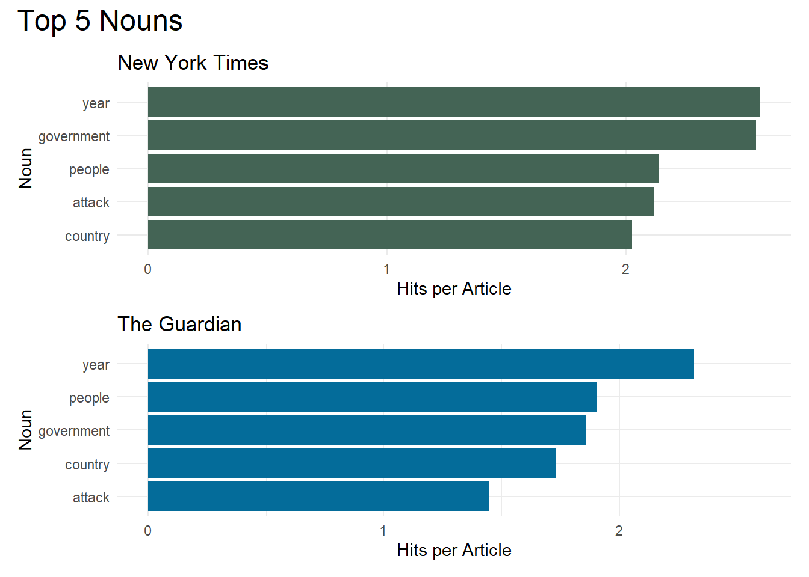
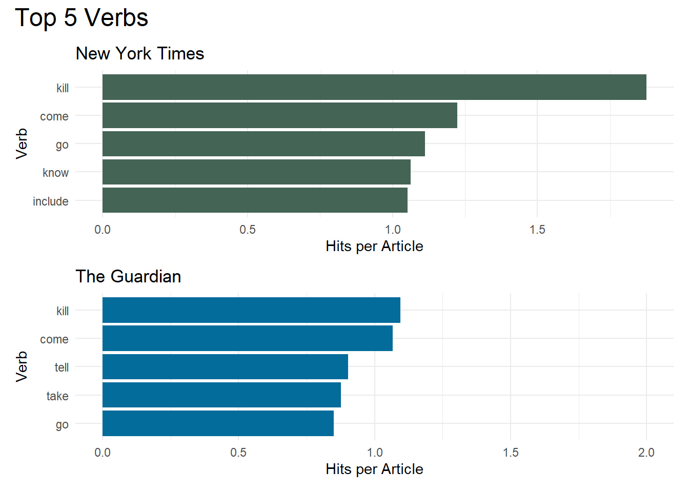
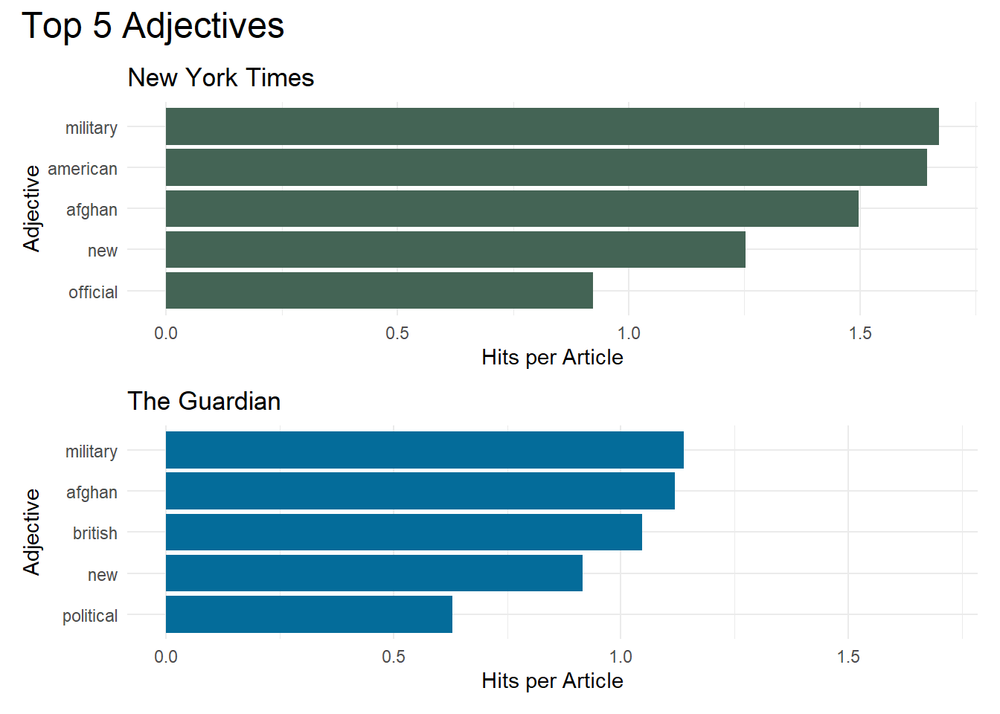

Chapter 12 Nouns, Verbs and Adjectives Vizualisation
In this Chapter I will make visualizations of key nouns, verbs and adjectives. I compare the two newspapers to see if their key nouns, verbs and adjectives differ.
The code in this chapter is mainly for making plots. The commenting will be sparse as it would be too tedious to comment everything.
First thing first, we start by loading the package tidyverse (Wickham et al. 2019), wesanderson (Ram and Wickham 2018) and patchwork (Pedersen 2020).
pacman::p_load(tidyverse, patchwork, wesanderson)Then we load the dataset containing nouns, verbs and adjectives for both newspapers.
#NYT
noun_nyt_1 <- read_csv("data/new_york_times/data_NER/noun_1.csv")
noun_nyt_2 <- read_csv("data/new_york_times/data_NER/noun_2.csv")
noun_nyt <- rbind(noun_nyt_1, noun_nyt_2)
noun_nyt <- as_tibble(noun_nyt)
verb_nyt <- read_csv("data/new_york_times/data_NER/verb.csv")
adjective_nyt <- read_csv("data/new_york_times/data_NER/adjective.csv")
#The Guardian
noun_guardian <- read_csv("data/guardian/data_NER/noun.csv")
verb_guardian <- read_csv("data/guardian/data_NER/verb.csv")
adjective_guardian <- read_csv("data/guardian/data_NER/adjective.csv")12.1 Color Palettes
Here I quickly define some color palettes with colors that i like. These palettes will be used for different plots. The same colors will be used consistently throughout the notebook.
color_palette_newspaper <- c(wes_palette("Chevalier1")[1], wes_palette("Darjeeling2")[2])12.2 Top 5 Nouns
Here we will plot the top 5 nouns. The two newspapers have a different number of articles. Therefore we need to penalize the number of hits of nouns to the total number of articles.
ye <- noun_nyt %>%
group_by(noun) %>%
summarize(n = sum(count)) %>%
mutate(penalized_count = n/21109) %>%
arrange(desc(penalized_count)) %>%
filter(noun %in% head(unique(noun), 5)) %>%
ggplot() +
aes(reorder(noun, penalized_count), penalized_count) +
geom_bar(stat = "identity", fill = color_palette_newspaper[1]) +
coord_flip() +
labs(x= "Noun", y="Hits per Article", title = "New York Times") +
theme_minimal()
yeye <- noun_guardian %>%
group_by(noun) %>%
summarize(n = sum(count)) %>%
mutate(penalized_count = n/9609) %>%
arrange(desc(penalized_count)) %>%
filter(noun %in% head(unique(noun), 5)) %>%
ggplot() +
aes(reorder(noun, penalized_count), penalized_count) +
geom_bar(stat = "identity", fill = color_palette_newspaper[2]) +
coord_flip() +
labs(x= "Noun", y="Hits per Article", title = "The Guardian") +
theme_minimal()
ye/yeye +
ylim(0,2.6) +
plot_annotation(title = "Top 5 Nouns",
theme = theme(plot.title = element_text(size=18)))
12.3 Top 5 Verbs
Here we will plot the top 5 verbs The two newspapers have a different number of articles. Therefore we need to penalize the number of hits of verbs to the total number of articles.
ye <- verb_nyt %>%
filter(verb != "say") %>%
group_by(verb) %>%
summarize(n = sum(count)) %>%
mutate(penalized_count = n/21109) %>%
arrange(desc(penalized_count)) %>%
filter(verb %in% head(unique(verb), 5)) %>%
ggplot() +
aes(reorder(verb, penalized_count), penalized_count) +
geom_bar(stat = "identity", fill = color_palette_newspaper[1]) +
coord_flip() +
labs(x= "Verb", y="Hits per Article", title = "New York Times") +
theme_minimal()
yeye <- verb_guardian %>%
filter(verb != "say") %>%
group_by(verb) %>%
summarize(n = sum(count)) %>%
mutate(penalized_count = n/9609) %>%
arrange(desc(penalized_count)) %>%
filter(verb %in% head(unique(verb), 5)) %>%
ggplot() +
aes(reorder(verb, penalized_count), penalized_count) +
geom_bar(stat = "identity", fill = color_palette_newspaper[2]) +
coord_flip() +
labs(x= "Verb", y="Hits per Article", title = "The Guardian") +
theme_minimal()
ye/yeye +
ylim(0,2) +
plot_annotation(title = "Top 5 Verbs",
theme = theme(plot.title = element_text(size=18)))
12.4 Top 5 Adjectives
Here we will plot the top 5 adjectives The two newspapers have a different number of articles. Therefore we need to penalize the number of hits of adjectives to the total number of articles.
ye <- adjective_nyt %>%
group_by(adjective) %>%
summarize(n = sum(count)) %>%
mutate(penalized_count = n/21109) %>%
arrange(desc(penalized_count)) %>%
filter(adjective %in% head(unique(adjective), 5)) %>%
ggplot() +
aes(reorder(adjective, penalized_count), penalized_count) +
geom_bar(stat = "identity", fill = color_palette_newspaper[1]) +
coord_flip() +
labs(x= "Adjective", y="Hits per Article", title = "New York Times") +
theme_minimal()
yeye <- adjective_guardian %>%
group_by(adjective) %>%
summarize(n = sum(count)) %>%
mutate(penalized_count = n/9609) %>%
arrange(desc(penalized_count)) %>%
filter(adjective %in% head(unique(adjective), 5)) %>%
ggplot() +
aes(reorder(adjective, penalized_count), penalized_count) +
geom_bar(stat = "identity", fill = color_palette_newspaper[2]) +
coord_flip() +
labs(x= "Adjective", y="Hits per Article", title = "The Guardian") +
theme_minimal()
ye/yeye +
ylim(0,1.7) +
plot_annotation(title = "Top 5 Adjectives",
theme = theme(plot.title = element_text(size=18)))